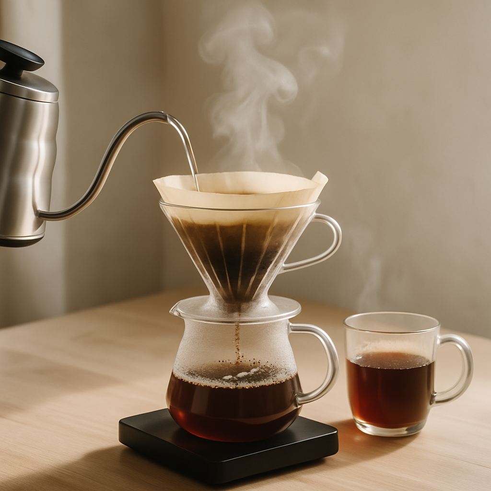

Cerita Kami
Kopilokalan lahir dari kecintaan mendalam terhadap kopi Indonesia dan keinginan untuk mengangkat harkat petani kopi lokal. Didirikan pada tahun 2020, kami memulai perjalanan dengan misi sederhana: menghadirkan kopi berkualitas tinggi langsung dari kebun ke cangkir Anda.
Kami percaya bahwa setiap biji kopi memiliki cerita unik yang mencerminkan tanah, iklim, dan dedikasi petani yang merawatnya. Melalui kemitraan langsung dengan petani di berbagai daerah di Indonesia, kami memastikan bahwa setiap produk yang kami tawarkan tidak hanya berkualitas tinggi, tetapi juga memberikan dampak positif bagi komunitas petani.
